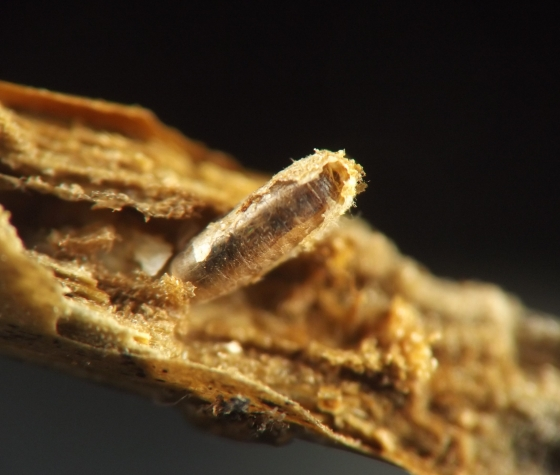
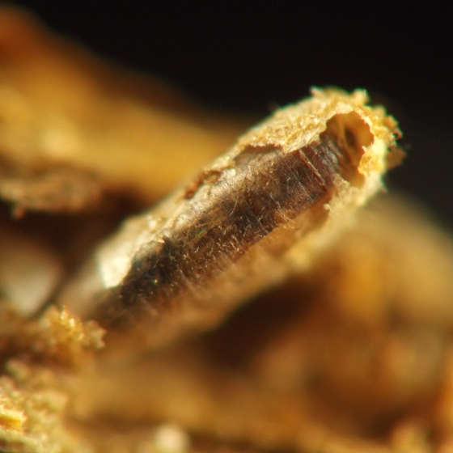
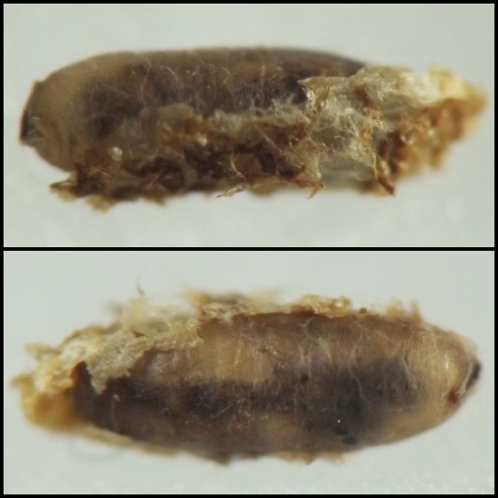
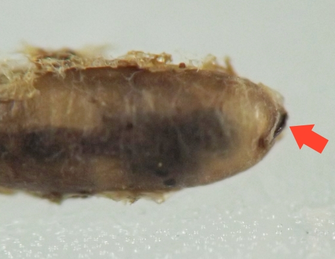
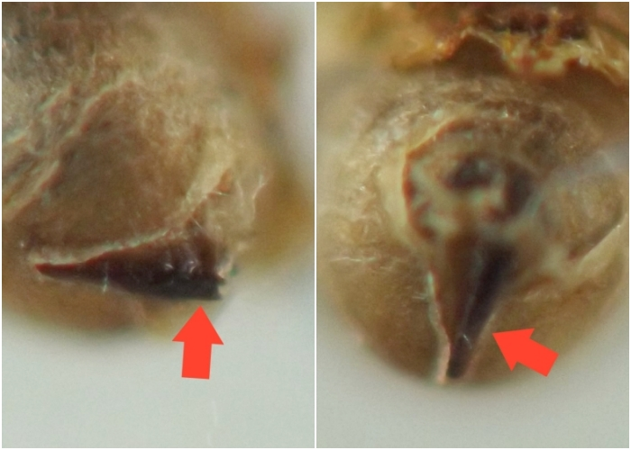

Local feeder (Diptera: Cecidomyiidae) in stems of Caulophyllum
| Record no.: | 0133 |
|---|---|
| Feeding guild: | Local feeder in stem |
| Taxonomy: | Diptera: Cecidomyiidae: cf. Neolasioptera sp. |
| Stages observed: | trace, larva, pupa |
| Distribution observed: | IA |
| Hosts in Caulophyllum: | C. thalictroides (blue cohosh) |
In a dead stem of the host in winter, I found an object I tentatively identified as a mummified larva of this cecidomyiid, positioned within the pithy interior of the knoblike node at the top of the stem where the leaves and fruit stalks had been attached. Inside the mummified larva was a single adult parasitoid wasp (presumably Platygastridae). The mummy itself could be recognized as such by the wasp inside and by the presence of the cecidomyiid larva's spatula, still visible on the anterior end of the mummy. In the photographs I took, the remnants of the cecidomyiid larva's white woven cocoon can be seen partly enshrouding the mummy.
For more information about stem-dwelling cecidomyiid larvae mummified by solitary endoparasitoids in the family Platygastridae, see Yegorenkova and Yefremova (2016). Van der Linden (2024) provides a list of links to images of mummified cecidomyiids on the BugGuide website.

 Prev
Prev
{kind=link}
{kind=link}

{kind=link}

{kind=link}

{kind=link}

Coll. 12/15/21, photos taken 01/16/22 (01-05).
- Van der Linden, J. 2024. Mummified cecidomyiids. Contributor article at BugGuide.net. Retrieved July 2, 2024 from https://bugguide.net/node/view/2341076.[return to in-text citation]
- Yegorenkova, E. and Z. Yefremova. 2016. Notes on Lasioptera rubi (Schrank) (Diptera: Cecidomyiidae) and its larval parasitoids (Hymenoptera) on raspberries in Russia. Entomol. Fennica 27: 15-22.[return to in-text citation]
Page created: October 31, 2023. Last update: March 9, 2026